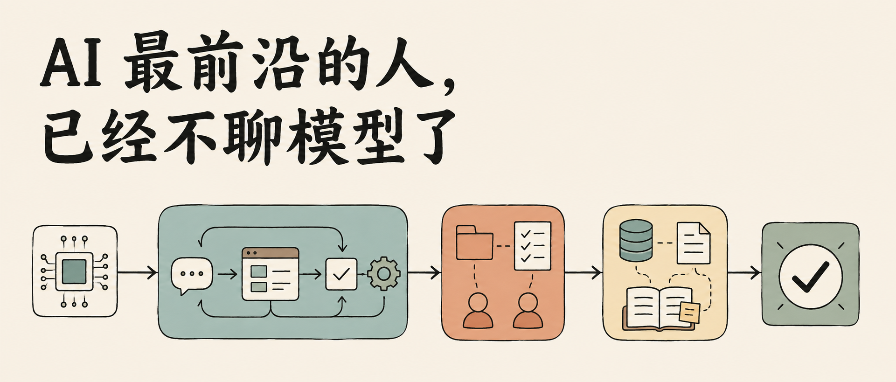
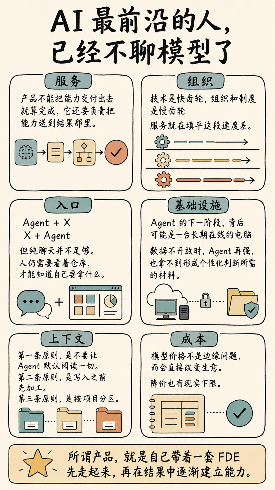
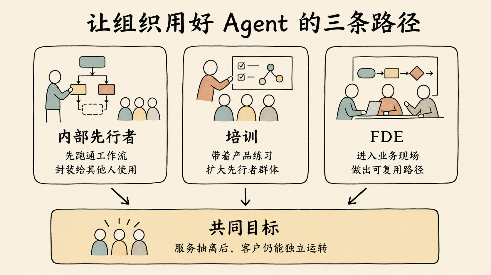
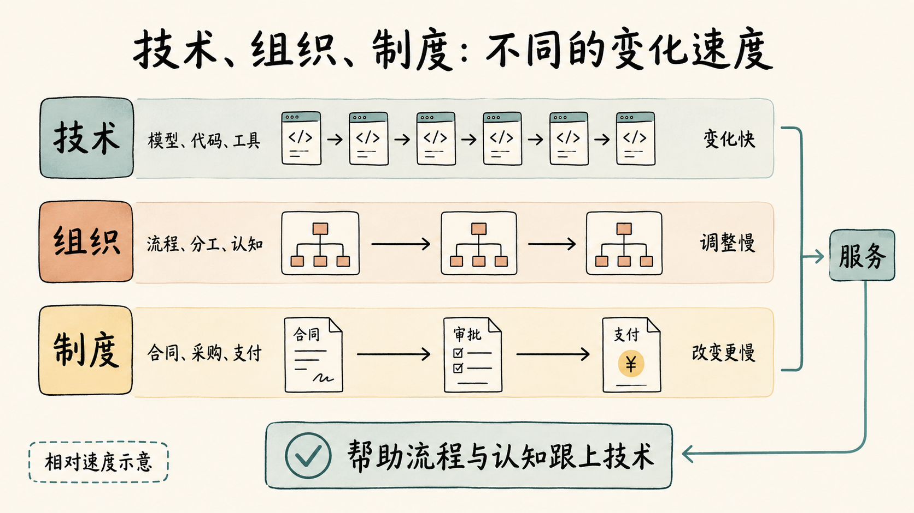
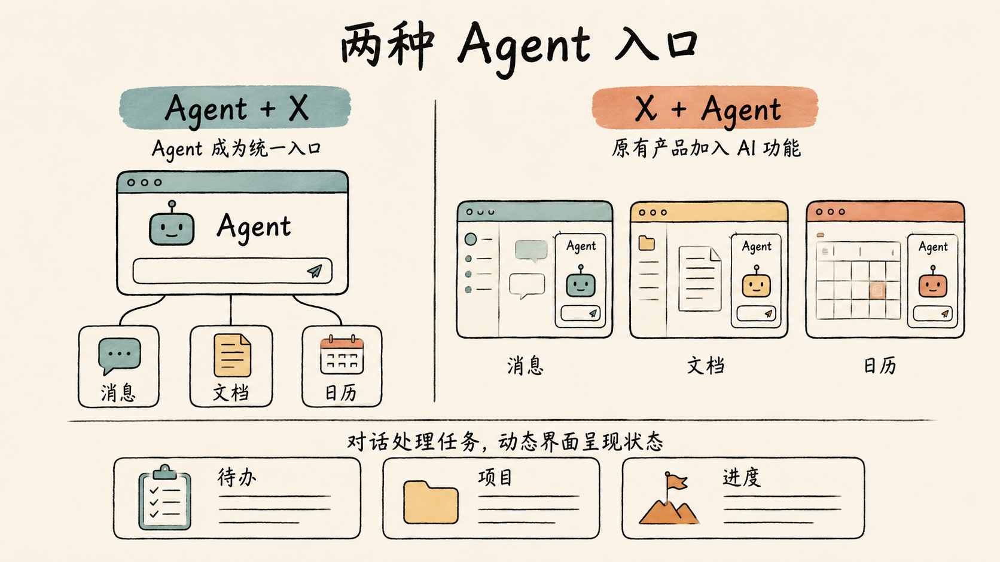
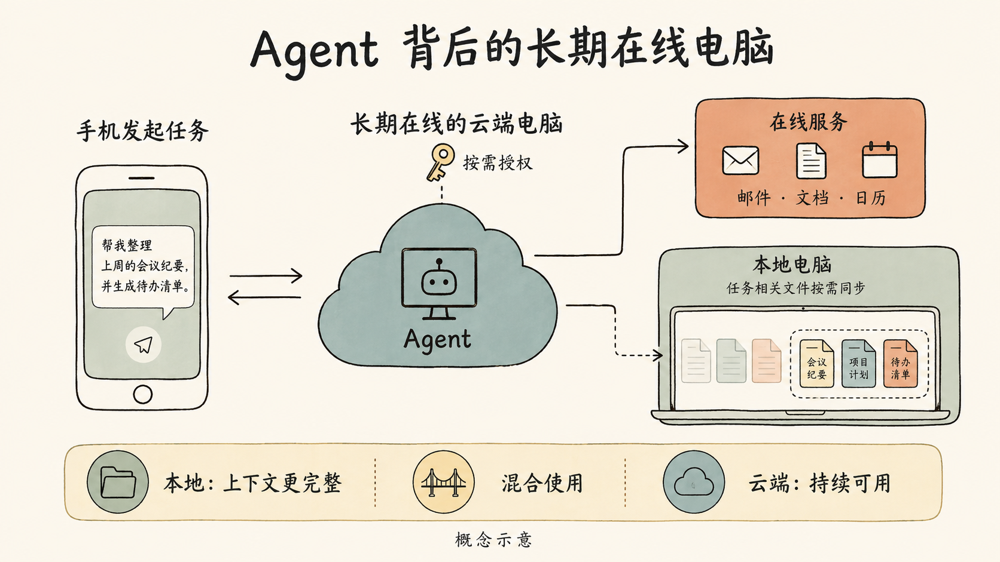
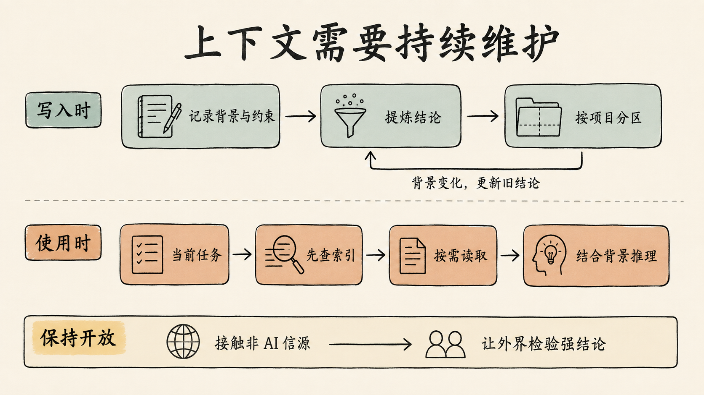
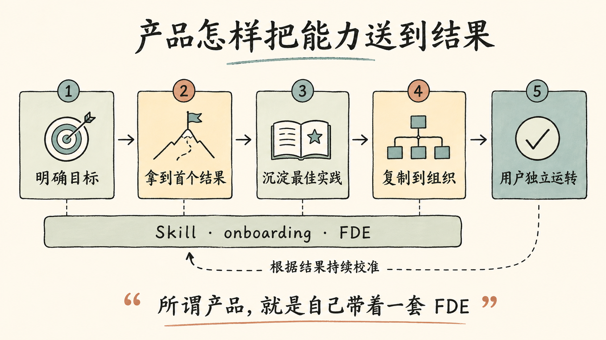

投资收件箱 · 精读报告
AI 最前沿的人，
已经不聊模型了
模型能力与真实结果之间仍有落差；下一轮 AI 竞争将转向 FDE、服务、基础设施和可维护的个人上下文。同一款 Agent 交到不同人手中，结果可能天差地别——对谈追问的是：AI 怎样穿过组织与制度，真正变成用户可持续获得的结果。
对谈纪要
15 个章节
8 张信息图
精读 ≈ 15 分钟

封面 · 当模型能力不再是唯一变量，竞争转向服务、组织、基础设施与上下文
TL;DR
核心论点 · 四个判断
全文 15 章的骨架：能力之外，决定结果的是服务、齿轮差、上下文与价格结构。
01
模型与业务之间始终有 gap，需要服务去填
买账号、买 Token 不等于买到生产力。产品不能把能力交付出去就算完成，还要负责把能力送到结果那里。
02
FDE 的完成态，是服务可以抽离
衡量标准不是陪客户越久越好，而是抽离之后客户还能「带着你的脑子运转」——培训 + FDE 两层滚动出可复用路径。
03
技术是快齿轮，组织和制度是慢齿轮
服务填平速度差。编码快，是因为暂时不必处理分发、付费、盖章和线下手续；越传统的行业反而越容易见效。
04
产品的终点，是自己带着一套 FDE
模型、Agent、Skill、onboarding、服务和最佳实践连成完整环路；上下文则是一辆要维护的车——主流模型降价、前沿模型仍贵。
MAP
全文地图
八个精读组覆盖原文全部 15 个章节，金句与数据均标注出处。

文章全景图 · 从「能力落差」到「产品自带 FDE」的论证链路
01
服务与落差：先让人拿到一个结果
对应原文 §模型和业务之间的落差 · §从「抢外卖券」开始
- 产品功能相同，交付结果却可能天差地别：同一款 Agent，有人很快形成工作流，有人只当更方便的问答框，还有人不知道自己该问什么。
- 买了账号、买了 Token，并不会自然获得生产力——这和装好飞书、企业微信就「至少会聊天」不一样，Agent 的使用因人而异。
- 这里的服务不是组建培训团队每天教客户写提示词，而是一种产品意识：目标是否明确、场景是否具体、最佳实践是否被封装、组织里谁先跑通、其他人怎样复用。
- To C 同理：Skill、内置 onboarding、示范内容和可复制的实践都在补这段落差；要让懂业务的人与懂 Agent 产品的人相遇。
- 「自动抢外卖券」被反复引用：每天能用、结果清楚、一句话可复制——那句固定的表达像咒语，背后封装的是一套最佳实践。
- 精美演示（前端、3D、视觉效果）适合传播，却未必最有用、也未必可复现：很多演示依赖人的选择、成本投入和反复调整。
服务裹着能力，而不是能力裹着服务。产品不能把能力交付出去就算完成，它还要负责把能力送到结果那里。
—— 原文引言 · 模型和业务之间的落差
02
FDE 的边界：不是做完需求就离场的外包
对应原文 §FDE 不是做完需求就离场的外包
- Agent 是模型与 Harness 形成的产品能力；进入一家公司后，不同员工的使用结果差异很大，FDE 要做的是把这段差异抬起来。
- 如果功能做完就走、组织里的人仍不会用，那是开发外包；真正的 FDE 还要让组织更理解自己的业务。
- 三条路径：① 让内部先跑出少数用得最好的人，其他人直接用他们封装好的结果；② 培训不可能拉平所有人，但能把 1% 先行者扩大到 5%、并提升剩余人群的认知；③ 内部人才和实践尚未长出时，由产品自带的 FDE 进入现场滚动出可复用路径。
- 海外 To B 从业者的判断被转述：不要期待所有员工同样水平地使用 Agent，更现实的是让约 5% 用得最好的人为其他人提供自动化——SaaS 时代用户点按钮，AI 时代让他们少点几个甚至一键完成。
- 零一万物转向 To B 垂直服务（按对谈转述）：以 Palantir 为参照，采用「培训 + FDE」两层做法——培训直接带产品使用、转化率约 75%；部分 FDE 持有股权、不背销售指标、最终指标是把自己抽离；被描述为毛利较高、有复购。
衡量服务成功的标准，不是服务团队陪客户越久越好，而是它最终抽离之后，客户还能「带着你的脑子运转」。
—— 原文 · FDE 不是外包

让组织用好 Agent 的三条路径 · 先行者封装 / 培训扩容 / FDE 进现场
03
快齿轮与慢齿轮：Skill 穿不过去的旧流程
对应原文 §技术快齿轮组织慢齿轮 · §Skill 与旧流程
- 新技术两三个月一轮，组织无法同步重构；制度、利益分配和商业结构比组织更慢——像一组转速层层下降的齿轮。服务就填在这段速度差里。
- 越传统的行业反而越容易见效：内容行业链条短、反馈快，从业者可能比服务方更快用上新工具；传统行业起点更低、改进更明显、更愿为价值付费——零一万物与养鸡行业合作正是这种反直觉选择。
- 个人同样受益于速度差收窄：把资产和工作流沉淀进 Skill 后，录一段视频只要五到十分钟，录完交给系统处理、回来直接发布。
- 但产品进入现实后立刻变慢：合作网站从想法到上线花了两个月；把钱打到合作方账户也因新公司新流程耗了两个月；一次极端经历是合同签了 8 份、共 120 张纸、盖了 80 次章，却没有一次完全正确。
- 编码显得格外快，是因为它暂时不必处理产品之外的分发、付费、政府关系和现实执行；Stripe、Airwallex 吸引人之处在于把收款、财务和销售后链路自动化到了更高程度。
- Skill 商业化悖论：用户试用 Skill 本身就要消耗 Token，再单独收费门槛更高；Skill 下载后多是开源文本，无法靠保密形成壁垒——现阶段靠 Agent 产品一次性购买授权或赞助开源，把优质 Skill 内化为产品体验。
- Skill 本质上仍像一套没有界面的软件：对谈中有人试过能力很强的 Skill，系统不断要求完成越来越难的下一次操作，最后只好放弃；真正进入个人工作流时往往必须重新定制。
- 企业采购放大摩擦：一次大厂采购从约 8 月办入库、到次年才办完；另一次两个月走完流程，却因个体户主体无法承载税务业务、换主体后全部重来——每家、每个部门、每个经办人要求都不同，无法靠一份统一 SOP 解决。
- AI 软件的试用也变了形：每次调用都消耗 Token，厂商难以无限开放免费试用，客户可能必须先签合同才能试用——本该帮助决策的体验环节被放到漫长采购流程之后。
低门槛场景负责让人开始使用，服务则要继续陪产品进入深水区，直到流程和结果真正改变。
—— 原文 · 从「抢外卖券」开始

技术、组织、制度：不同的变化速度 · 服务填平齿轮差
04
SaaS 与基础设施：从 127.0.0.1 到新代码托管范式
对应原文 §SaaS 从来不只是一套软件
- SaaS 本身并不是一个软件，SaaS 是一种服务——用户购买 Token，最终关心的是这些 Token 提供了什么服务，而不是软件有多少按钮。
- 手机上的 App 可能越来越少：旧 App Store 生态的繁荣在减弱，新的分发基础设施却没有建立起来。Vibe coding 的人不少，问题是做出的东西无法让别人使用——有人把
127.0.0.1 当成地址发给别人。
- 旧互联网平台不欢迎用户发布产品：发内容可以，发会带走用户和关系链的产品可能被限流；小红书的小工具与相关 Skill 是一种「平台仍封闭、但开出受控通道」的尝试。
- GitHub 代表另一类基础设施：AI 一次能生成 3 万、5 万甚至 10 万行代码，每次改动三五十个文件，人类已经很难完整审阅——未来可能需要不再以纯粹人类审阅为中心、面向 AI 提交的新代码托管范式。
- 即便如此，Git 仍是今天 Agent 协作最重要的纽带之一：用户反馈转成 GitHub Issue，Agent 监控 Issue、完成修改、发布 Release；多个 Agent 也能通过 Issue 和 Pull Request 交换工作，不必另建交流语言。
- 这套基础设施背着历史包袱：旧平台必须保证海量既有代码和用户继续可用；免费服务、自动化 Push 又反过来让平台承压——它既是巨头最重要的 AI 时代支点，也因旧系统负担频繁受压。
- 被现实修正的认知：Coding 并没有一路高歌猛进，顶尖模型发布显著变慢；相反小模型降本进步很快，更多人已经用得起足够好的 Coding 模型。
SaaS 本身并不是一个软件，SaaS 是一种服务。
—— 原文 · 回到 SaaS 的本质
05
入口之争与新关系网：Agent + X，还是 X + Agent
对应原文 §Agent 加 X 还是 X 加 Agent · §新的关系网
Agent + X：用户始终留在 Agent 中，IM、文档、日历成为被调用的能力；X + Agent：Office、微信等在旧界面里加一个 AI 对话框——既有互联网公司天然选后者，因为不能拆掉立身之本。- 对谈更看好
Agent + X 的后劲：过去每个功能对应一个 App，现在可以只保留一个 Agent 调用很多 App，人与系统的入口统一。而 X + Agent 的问题在于 AI 被生硬插进旧结构：旧界面动不了、旧组织不理解、旧基建未必支持，且每个 Token 都有成本、免费+广告的商业逻辑难以延续。
- 但纯聊天并不足够：人的记忆力撑不起完全没有界面的系统——订过的票、上千条笔记、未完成任务，只有看见目录才会被想起。旧 UI 可以消失，必须出现随任务变化的动态 UI，把待办、遗留工作和项目状态呈现在 Dashboard 中。
- 新关系网：若每个人都有自己的 Agent，就多出 H-A、A-H、A-A 路径——「提醒对方明天聊什么」可以由两个 Agent 协调日程、发出邀约，结果呈现在双方 Dashboard 上。
- 这张网还没形成：有长期上下文的 Agent 太少；Agent 嵌进 Slack 等已有上下文的旧工具很顺，另建网络则丢上下文、用户还要学新心智。曾有人让两个个人 Agent 互相聊天——用户学不会、也没人用；没有摆在面前的胡萝卜，新概念很难普及。
- 接受度也是障碍：人们能接受自己的 AI 写出的文字，却不愿接受别人的 AI 直接输出（可能还要自己的 Agent 再翻译一次）；水印争议正说明——即使「意思」没变，每个词都变了，感受就完全不同；法律和合同中换一个词更可能改变实际含义。
- 长期想象接近贾维斯：助理知道健康数据、每天的对话、人与人的关系、个人认知模型。当前 Agent 更像一把更好的锤子——但这次与互联网不同，AI 真的带来了智能（尽管没有意识）；问题已从「能不能做一个功能」转向「智能如何进入关系和生活」。

两种 Agent 入口 · Agent + X（能力被调用）vs X + Agent（旧界面加对话框）
06
内容消费与现实：Token 世界同时靠近两条轴
对应原文 §大多数人先感受到的也许不是生产力 · §Token 世界的三条轴
- 很多普通人的工作并不需要复杂 Agent，还有越来越多人未必有足够多的工作可供 AI 提效——他们最先感受到的变化，可能不是生产力，而是内容消费。
- 对谈中的说法：AI 短剧相关内容的渗透规模已经「超过 8 亿」（数字未展开统计口径，但被用来说明内容消费的普及远快于 Agent 工作流）。
- 一位参与者刷到短剧后的自我观察：清楚剧情像小学生写的、每一集都在用钩子引导下一步，但仍一集接一集地点下去——「一边知道自己被引导，一边顺着引导继续走」。
- 短剧在像网文一样日更、承载长篇剧情和复杂架构；「短」不应直接等同于「低质量」：两小时电影可以讲好故事，两分钟短剧也可以。
- 供给逻辑变化：一个人只要有一颗故事种子，就可能让 AI 帮它长成一棵树——大部分作品也许只有 60 分，但海量供给中会持续冒出 80 分、90 分的内容；原本会讲故事、只受制作门槛限制的人得到被看见的机会。AI 游戏与 Steam 上的新作品被视为同一方向。
- 行业显得割裂：一拨人只谈工作效率，另一拨人只做 AI 内容、短剧、漫剧和游戏——但从用户数量看，内容消费很可能是更大的入口。
- Token 世界三条轴：与互联网结合出现写作、短剧、游戏、Coding；与原子世界结合则更直接——会飞到落水者头顶再投下的救生衣、广西洪灾中「比以前高 1 万倍」的无人机投送效率（现场感受的倍数）。
- 药物研发：AI 加速候选药物发现，临床试验反而成为更慢的环节；参与者据此预测未来三到五年可能集中看到一批疾病得到治愈或延缓；实验用猴供不应求是相关实验活动增多的侧面观察。
AI 的边界并不只由模型决定，还由它接触的世界决定。
—— 原文 · Token 世界正在同时靠近互联网和原子世界
07
上下文与个人系统：贴身价值从哪里来
对应原文 §上下文加推理 · §长期在线的电脑 · §上下文是一辆要维护的车
- 眼前最容易感受到的两个变化：语音输入（自动换行、编号、整理排版——说话像和自己对话，打字则不断斟酌删除，是两套心智）和翻译（系统默认完成，语言隔阂不是消失、而是少了一个足以阻止行为的动作）。
- 案例一：慢性病约 10 年、看过至少 10 位医生，长期变化总是讲到一半被打断。与个人 Agent 长对话后，Agent 推理出过去未被提出的可能性并建议一种药；医生确认、服药后病情好转，原本难以恢复的体重增加了约 5 到 10 斤。
- 案例二：连续数月脑雾、睡不醒、跑步恶心，一直以为自己是甲减。因为每天和 AI 聊天，系统掌握了睡眠与身体感受的上下文——Agent 提出缺铁性贫血的可能并建议检查，结果显示处于临界值，持续补铁后症状好转。
- 案例三：长期激素相关问题，BMI 与空腹血糖都正常、常见解释不适用——Agent 提出胰岛素抵抗的可能，胰岛素释放实验显示若干时点的释放量高出正常水平五六倍到七八倍；过去只看空腹血糖，处理可能一直停留在治标层面。
- 归纳成两项能力：AI 能耐心读取远超一次问诊范围的长期上下文；今天的模型已有相当强的专业推理能力。大量上下文与推理结合，才可能产生贴身结果——真正的限制是上下文能否被准确、持续地获取。
- 下一阶段的基础设施：新 Agent 产品为每个人分配长期存在的云端虚拟机，按需只同步任务涉及的文件（本机 100 个文件里同步 3 个），需要权限时才一键授权；混合路线是开机远程操控本机、关机用云端能力。
- 地区差异：海外用户的活动散落在 Gmail、Notion、Obsidian、GitHub 等可通过 MCP 开放的服务里；国内可连接的产品更少，大量信息留在微信等封闭环境——数据不开放时，Agent 再强也拿不到形成个性化判断的材料。
- 上下文维护三原则：① 不要让 Agent 默认阅读一切——先建索引、按需调用；② 写入之前先加工——说明背景、话题、边界与约束，再提炼结论；③ 按项目分区——项目结束只保留真正需要延续的结论和认知。
- 上下文不是越多越好：旧材料积累太多后，Agent 会把新的思考拉回过去的平均值——既像路径依赖，也像由个人历史构成的信息茧房。
- 进阶做法是给 Agent 一个「取景框」：把认可的一位企业管理者的方法提炼下来，让 Agent 每天观察自己的沟通与行为、指出差距——上下文也可以围绕「我想成为什么样的人」持续校准。
- 警惕闭环熵增：有人相信自己的 Agent 开发出「解决模型幻觉的新框架」，与 Agent 不断相互肯定、把结论越推越大——而「解决幻觉」本身可能就是更大的幻觉。破法：把强结论公开接受反驳，继续亲自读书、看长视频、接触非 AI 信源。
上下文是一辆要维护的车，不是一个增值的房。房子放那里期待自然升值；车必须保养、清理和调整，才能继续向前。
—— 原文 · 上下文哲学

Agent 背后的长期在线电脑 · 云端虚拟机 + 按需同步 + 一键授权

上下文需要持续维护 · 索引 / 写入前加工 / 项目分区
08
价格与产品终点：模型只是起点
对应原文 §主流模型越来越便宜前沿仍贵 · §产品的终点是自己带着一套 FDE
- 一场 100 元的赌局：他判断最前沿模型会越来越贵——DeepSeek 大幅降价后认输，没想到后来又涨价约 12 倍、赢回那 100 元。价格不是单向变化，而是在供给、竞争、成本与产品策略之间摆动。
- 两条曲线：主流模型不断降价，平替满足约 90% 用户需求；最前沿的 SOTA 模型保持高价甚至继续上涨——用户为基准测试 5 到 10 分的差距，可能付出 50 倍到 100 倍的价格。
- 值不值取决于任务：有人用便宜模型写文章觉得无法使用，换成贵约 100 倍的模型重写后几乎不用再改——「天壤之别」；若主流模型已覆盖需求，追逐最前沿只增加成本和疲劳。
- 模型与 Harness 在联合：某些模型只在特定 Harness 里表现最好（训练和数据围绕整套组合发生）；完全解耦会把厂商推入红皇后效应——必须拼命奔跑才能停在原地，所以厂商有动力联合训练、提高替换成本。
- 缓存经济：DeepSeek 在某产品的缓存命中率约 96%、特定组合中常见 100%；未缓存 Token 价格可能是缓存 Token 的 10 到 100 倍，命中率从 90% 提到 95%，总成本就可能相差约两倍。但过度依赖缓存可能降低输出质量——未来竞争同时看能力、适配、命中率与质量损失。
- 降价有下限：按官方 API 价格转售的中转服务在价格很低时反而消失——分发、结算、运维和支持不会趋近于零；竞争从「还能便宜多少」转向「同样价格能提供什么质量和完整服务」。
- 回到起点的问题：大多数人没有明确目标、甚至不会提问，模型只能无状态地响应。Harness 要帮用户找到目标和路径——像多邻国把「我想学英语」变成今天就能开始的一次行动。
- 「你只给用户模型没有用。」模型、Agent、Skill、onboarding、服务和业务最佳实践必须连成完整环路——所谓产品，就是自己带着一套 FDE：知道用户为什么来、怎样拿到第一个结果、识别少数先行者、把实践交给更多人、必要时进现场、最终让服务可抽离。
- 终局分化：不同产品的 onboarding 和 FDE 会越来越不一样，创造者的审美、对用户的理解和对结果的选择直接进入产品——被验证有效的方法告诉 100 个人，可能只有约 10 个人愿意听从；需求本来就多样。
你只给用户模型没有用。所谓产品，就是自己带着一套 FDE。
—— 原文结语 · 产品的终点

产品怎样把能力送到结果 · 完整环路：模型 → Agent → 服务 → 结果
WALL
金句墙 · 原句摘录
八句均摘自原文，未做改写；标注对应章节。
服务裹着能力，而不是能力裹着服务。
§ 模型和业务之间，始终隔着一个落差
它最终抽离之后，客户还能「带着你的脑子运转」。
§ FDE 不是做完需求就离场的外包
低门槛场景负责让人开始使用，服务则要继续陪产品进入深水区。
§ 从「抢外卖券」开始
SaaS 本身并不是一个软件，SaaS 是一种服务。
§ SaaS 从来不只是一套软件
但纯聊天并不足够——必须出现新的动态 UI。
§ Agent 加 X，还是 X 加 Agent
大量上下文与推理结合，才可能产生贴身结果。
§ 上下文加推理，开始产生贴身价值
上下文是一辆要维护的车，不是一个增值的房。
§ 上下文是一辆要维护的车
你只给用户模型没有用。所谓产品，就是自己带着一套 FDE。
§ 产品的终点
DATA
关键数据点
全部数字来自原文对谈转述或现场感受，口径以原文表述为准。
75%
零一万物培训直接带产品使用后的转化率（转述）
1% → 5%
企业用得最好的先行者比例：培训的目标扩容量
8 亿
AI 短剧内容渗透规模（对谈说法，口径未展开）
96%
DeepSeek 某产品缓存命中率（特定组合常见 100%）
10–100×
未缓存 Token 相对缓存 Token 的价格倍数
50–100×
为基准测试 5–10 分差距可能付出的价格倍数
≈12×
DeepSeek 涨价幅度——100 元赌局的胜负手
90%→95%
缓存命中率提升后总成本可能相差约两倍
5–10 斤
慢性病案例：服药后恢复的体重（10 年病史 / 10+ 位医生）
80 次
8 份合同、120 张纸的盖章次数——没有一次完全正确
1 万倍
广西洪灾中无人机救援效率（现场感受的倍数）
SOURCE
出处与说明
- 原文
- 《AI 最前沿的人，已经不聊模型了》— inbox/article/投资/AI最前沿的人已经不聊模型了.md（对谈纪要整理）
- 配图
- 8 张信息图取自 inbox/article/投资/imgs/ai-frontier-beyond-models/，与正文一一对应
- 本报告
- 按 DESIGN.md（奶油编辑 · 手账纸感 · L1 精致静态）生成的单文件 HTML 精读报告；要点、金句与数据均直接摘自原文，未做观点改写
- 生成日期
- 2026-09-06